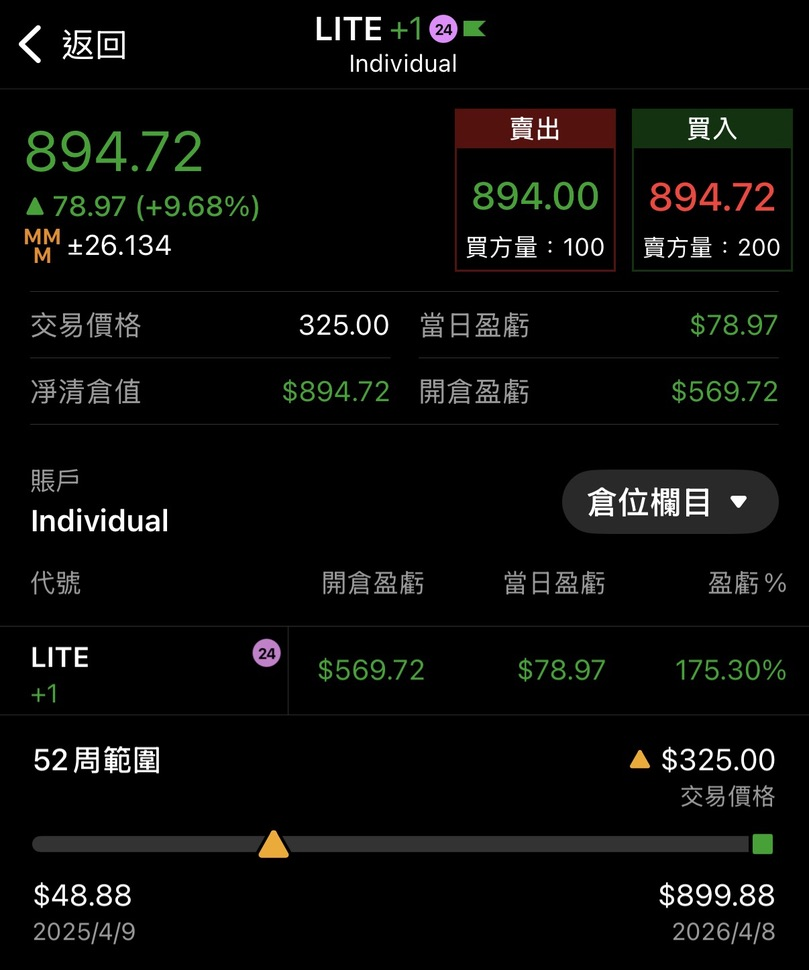
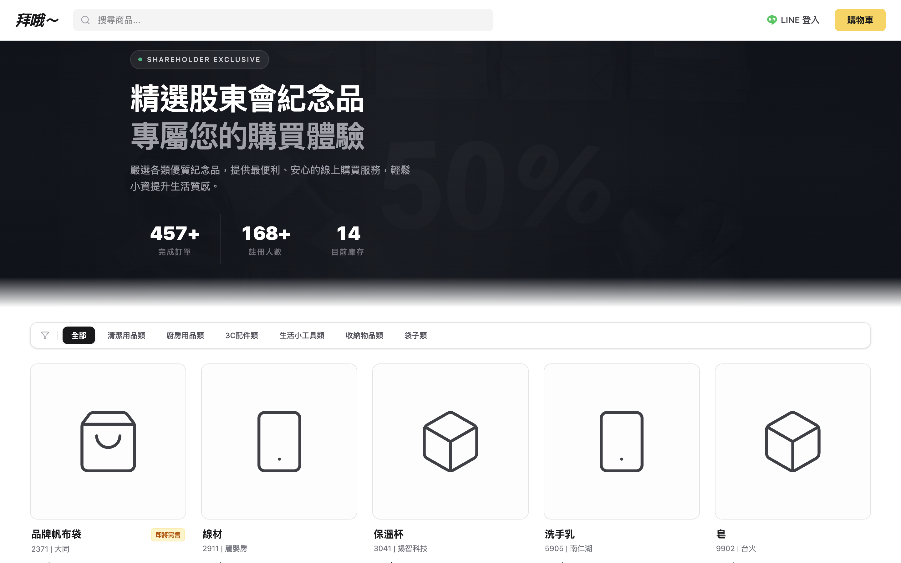

量化思維驅動的
金融 × 科技實踐者
國立政治大學企業管理學系三年級，政大人工智慧應用社-教學長，GPA 4.0。用嚴謹的量化回測方法設計台股處置股選股系統（勝率 78.2%、累積單利報酬 527.4%（2020年起）），並以 Vibe Coding 開發落地 FinTech 產品。
專業領域
台股交易邏輯
籌碼面為主，基本面為輔的交易模式。從「成交量就是一切的基石」理解到資金的流動就是第一手的消息。適當的避險，賺取個股的alpha，讓晚上有安穩的sleeping
FinTech 開發
專注弭平市場資訊斷點。使用Antigravity進行Vibe Coding，並在其學習、開發各類程式工具。包含網路商店、綜合資產控制板、N8N等。最後利用AI工具達成槓桿產出
AI 教學與應用
現任政大 AI 應用社教學長，主講過 5 場 AI 實務課程，累積指導 60+ 名學員。提倡從生活中尋找痛點，並且利用AI 輔助開發，提升開發效率與產出品質。
精選專案

Strategy｜處置股量能過濾系統
獨立開發的台股雙因子量化策略：以「監管處置事件」作為行為異常訊號因子，疊加「成交量 > 1,000 張」作為流動性品質因子。完整執行資料蒐集清洗、因子建構、回測模型建立全流程，運用 MAE/MFE 統計驗證進場品質（贏單平均 MFE 8.18% > MAE 4.53%；虧單平均 MAE 7.72%），平均每筆報酬 3.85%。積極穩定交易策略，目前最大回撤控制於 -29.53%。

光通訊產業研究｜Lumentum（LITE.US）
系統性分析算力基礎設施「光進銅退」技術轉型趨勢，分析框架涵蓋技術驅動因素（矽光子取代銅纜的物理限制）、供應鏈競爭格局（Lumentum、II-VI、Coherent 市佔分析）、財務結構評估（毛利率趨勢、資本支出循環），以及 AI 算力建置對訂單能見度的影響。2025 年 12 月提前布局 Lumentum，達成波段獲利逾 100%。

股東會紀念品權利電商網站
以 Vibe Coding（AI 協作開發）獨立完成的輕量化全端電商平台，解決台灣散戶領取股東會紀念品的流程痛點。核心差異在於深度整合 LINE 生態系——透過 LINE OAuth 實現一鍵登入、LIFF（LINE Front-end Framework）完成無縫購買與推播通知，讓用戶在最熟悉的介面完成交易。從市場洞察、產品設計到正式部署，全程自主完成。
從失敗中建立制度，而非依賴直覺
"正確的產業判斷不等於正確的進場時機。2025 年初布局 ABF 載板的操作失誤，讓我理解： 即便看好長期趨勢，仍須嚴格評估短期財務健康度與流動性風險。 此後建立『進場即預設出場』SOP——每筆投資在進場前即確立停損條件， 且後續決策與前次損益完全脫鉤，確保判斷的客觀性。"
關於我
莊宇正（Chuang Yu-Cheng），就讀國立政治大學企業管理學系三年級，GPA 4.0。 從高中一年級開始便對金融市場抱持強烈企圖心，並在2020年開戶，開始在台股中交易。一開始的交易雖然都是小額零股，所以養成不停損的交易習慣。尤其是在經歷人人航海王的時代，下跌就是加倉，不在乎任何交易風險，這也讓我最後留在海上成了水鬼一枚。 在進入大學後，除了在系統性商學訓練之外，長期的交易也更認識自己的交易優缺點，並透過實戰操作，重新反覆的檢討與修正自己的交易策略，最後逐漸形成一套屬於自己的交易系統。
更甚至也接觸到程式交易，雖然不是本科生，但透過AI和自身的學習，逐漸學習程式交易。到現在對程式交易的理解不停留於理論層面，而是已經可以獨立完成從原始資料蒐集、因子建構、 回測模型建立到績效驗證的全流程。同時具備 AI 輔助開發能力，能獨立將想法落地為可部署的產品。
學歷
金融證照
技能
正在尋找
2026 暑期實習機會。
量化研究 × FinTech 開發 × AI 應用——期待在實習中將學術基礎與實務環境真正接軌， 以積極的學習態度創造即時貢獻。